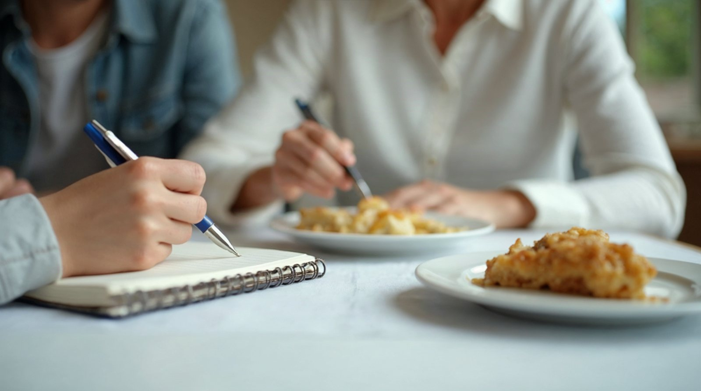
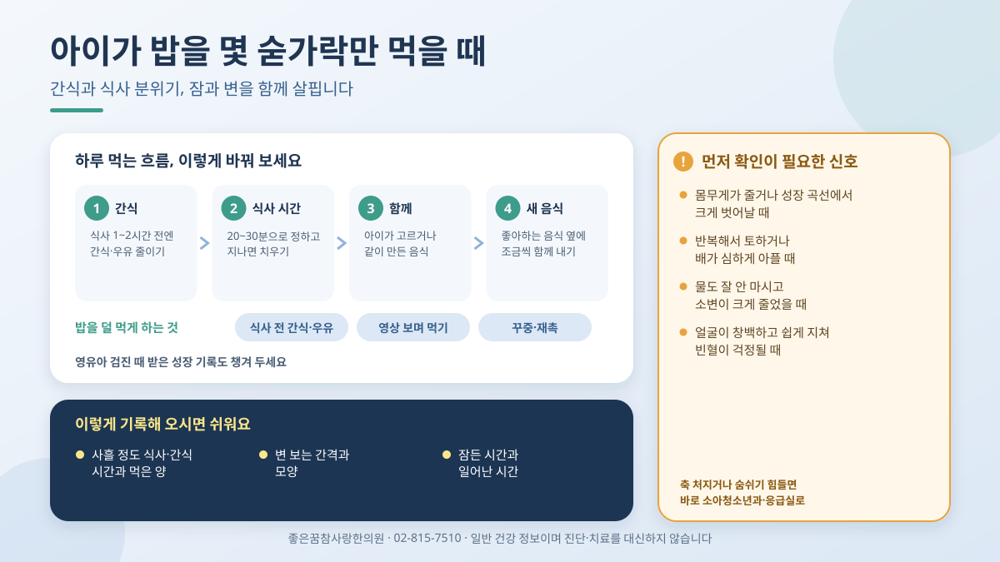

이종호 한의사 감수좋은꿈참사랑한의원 대표원장 (한의사 면허번호 19769)발행 2026-11-23 · 수정 2026-11-26
이 글의 차례
아이가 밥을 몇 숟가락 먹고 거부할 때는 식사 전 간식이나 우유로 이미 배가 찬 경우, 식사 분위기, 활동량, 잠과 변 상태가 함께 영향을 주는 경우가 많아, 하루 먹는 흐름 전체와 성장 곡선을 함께 살핍니다. 끼니마다 실랑이를 하다 보면 아이가 덜 자라는 건 아닌지 걱정도 함께 커집니다.
왜 이런 불편이 생길 수 있나요
- 식사 전 간식이나 우유, 주스로 배가 차 있으면 밥을 적게 먹을 수 있습니다.
- 영상을 보며 먹거나 식사 시간이 길어지면 먹는 데 집중하기 어렵습니다.
- 변비가 있거나 활동량이 적은 날에는 입맛이 떨어지기도 합니다.
- 한의학에서는 아이의 소화와 잠, 쉽게 지치는 경향을 함께 살핍니다.
- 식사 때 꾸중이나 재촉이 잦으면 식탁 자체를 피하고 싶어 하는 아이도 있습니다.

먼저 이렇게 여쭙니다
- 간식은 하루에 몇 번, 언제 먹나요?
- 식사 시간에 영상이나 장난감을 보나요?
- 변은 며칠에 한 번, 어떤 모양인가요?
- 밤에 몇 시에 자고, 잘 자나요?
- 좋아하는 음식과 싫어하는 음식이 뚜렷한가요?

일상에서 먼저 해 볼 수 있는 것
- 식사 1~2시간 전에는 간식과 우유 줄이기
- 식사 시간을 20~30분 정도로 정하고 지나면 치우기
- 아이가 직접 고르거나 함께 만드는 음식 하나 넣기
- 영유아 검진 때 받은 성장 기록 챙겨 두기
- 새로운 음식은 좋아하는 음식 옆에 조금씩 함께 내기
한의원에서 함께 살필 수 있는 경우
- 입이 짧고 식사량이 적은 아이의 경우 소화, 변, 잠을 함께 살핍니다.
- 배가 자주 아프다고 하거나 쉽게 지치는 경우 몸의 경향을 함께 살핍니다.
- 가져오신 성장 기록으로 키와 몸무게의 흐름을 함께 살핍니다.
좋은꿈참사랑한의원에서는 보호자와 아이의 이야기를 모두 듣고, 아이가 겁먹지 않도록 무엇을 왜 하는지 먼저 설명합니다. 진맥을 기본으로 하고 필요하다고 판단될 때 복진 같은 방법을 더해 아이의 몸 상태를 살핀 뒤, 아이의 나이와 상태에 맞는 방법을 보호자와 함께 정합니다.
이렇게 기록해 오시면 상담이 쉬워집니다
- 사흘 정도의 식사와 간식 시간, 먹은 양
- 변 보는 간격과 모양
- 잠든 시간과 일어난 시간
- 영유아 건강검진 결과나 성장 기록
이런 증상은 먼저 확인이 필요합니다
- 몸무게가 줄거나 성장 곡선에서 크게 벗어나는 경우(소아청소년과 진료)
- 반복해서 토하거나 배가 심하게 아픈 경우
이런 신호가 있으면 한의원보다 가까운 병원이나 응급실을 먼저 찾으세요.

여쭙는 것
- 간식은 하루에 몇 번, 언제 먹나요?
- 식사 시간에 영상이나 장난감을 보나요?
- 변은 며칠에 한 번, 어떤 모양인가요?
생활에서 해 볼 것
- 식사 1~2시간 전에는 간식과 우유 줄이기
- 식사 시간을 20~30분 정도로 정하고 지나면 치우기
- 아이가 직접 고르거나 함께 만드는 음식 하나 넣기
한의원에서 함께 살필 것
- 입이 짧고 식사량이 적은 아이의 경우 소화, 변, 잠을 함께 살핍니다.
- 배가 자주 아프다고 하거나 쉽게 지치는 경우 몸의 경향을 함께 살핍니다.
- 가져오신 성장 기록으로 키와 몸무게의 흐름을 함께 살핍니다.
먼저 확인이 필요한 신호
- 몸무게가 줄거나 성장 곡선에서 크게 벗어나는 경우(소아청소년과 진료)
- 반복해서 토하거나 배가 심하게 아픈 경우
한눈에 보는 표
| 구분 | 핵심 |
|---|---|
| 여쭙는 것 | 간식은 하루에 몇 번, 언제 먹나요? 식사 시간에 영상이나 장난감을 보나요? |
| 생활에서 해 볼 것 | 식사 1~2시간 전에는 간식과 우유 줄이기 식사 시간을 20~30분 정도로 정하고 지나면 치우기 |
| 한의원에서 함께 살필 것 | 입이 짧고 식사량이 적은 아이의 경우 소화, 변, 잠을 함께 살핍니다. 배가 자주 아프다고 하거나 쉽게 지치는 경우 몸의 경향을 함께 살핍니다. |
| 먼저 확인이 필요한 신호 | 몸무게가 줄거나 성장 곡선에서 크게 벗어나는 경우(소아청소년과 진료) 반복해서 토하거나 배가 심하게 아픈 경우 |
자주 묻는 질문
억지로라도 먹여야 하나요?
억지로 먹이면 식사가 싫어질 수 있습니다. 정해진 시간에 식사를 내고 아이가 스스로 먹게 기다리는 것을 권합니다.
성장 기록은 어디서 보나요?
영유아 건강검진 결과나 모자수첩 기록을 가져오시면 함께 봅니다.
어린이집 끝나고 저녁에 가도 되나요?
평일은 저녁 8시까지 진료합니다(점심 13:00~14:00). 아이와 함께라면 방문 전 전화로 대기 상황을 확인해 주세요.
영양제를 먹이면 밥을 더 먹나요?
영양제만으로 입맛이 바뀌기는 어렵습니다. 먹이고 있는 영양제가 있다면 알려 주시면 함께 확인합니다.
좋은꿈참사랑한의원은 재진 때 지난번 이야기부터 이어서 여쭙니다. 진료시간과 예약은 오시는 길에서 확인하세요.
어디서 상담받을 수 있나요?
좋은꿈참사랑한의원은 서울 동작구 만양로2길 2 신성빌딩 3층·5층(서울 동작구 상도동, 7호선 상도역 3번 출구 근처)에 있습니다. 한의사 3명(이종호 대표원장, 조영기 수석진료원장, 정원영 진료원장)이 진료합니다. 진료시간은 평일 09:30~20:00(점심 13:00~14:00), 토·일·공휴일 09:30~15:00이며, 방문 전 전화로 확인을 권합니다. 예약은 네이버 예약, 카카오톡 상담, 전화 02-815-7510로 받습니다.
이 글은 일반적인 건강 정보이며 개인의 진단이나 치료를 대신하지 않습니다. 증상이 있거나 복용 중인 약이 있다면 진료를 통해 확인하세요. 치료 효과는 개인마다 다를 수 있습니다.
작성 기준: 일반적으로 알려져 있는 건강 정보를 참고해 정리했습니다(대표원장 감수). 증상 기록은 1~2주 동안 하루 1회, 비슷한 시간에 적어 오시면 지난 상태와 비교하기 쉽습니다.